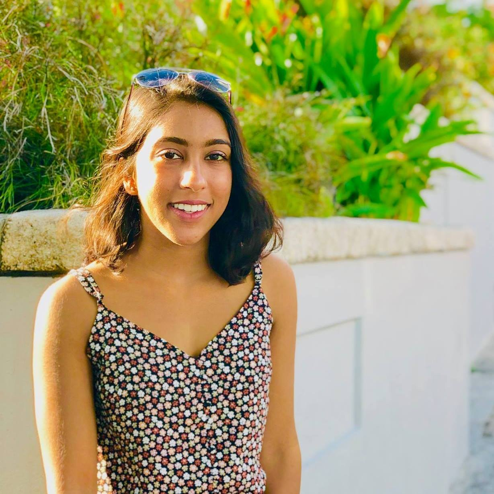

Daniel Zhang
President
Class of 2022, Course 7
Favorite foods: Sushi, dumplings, noodles, tbh any asian food
Bio: Hey everyone, I’m Daniel and currently a sophomore studying bio! Outside of MPS, I love conducting research at the Koch and involved in clubs like dynaMIT and Medlinks. In my free time, catch me listening to music or watching sports.

Katie Downey
Finance Chair
Class of 2021, Course 7 & 9
Favorite food: Chipotle
Bio: Besides MPS, Katie plays club volleyball and is involved in MedLinks, Simmons house government, and GlobeMed. She spends all her free time in the Koch at her UROP studying the effects of aneuploidy on the development and treatment of leukemia and lymphoma.

Chanseo Lee
Membership Vice Chair
Class of 2023, Course 5-7
Favorite foods: K-BBQ and spicy rice bois
Bio: Hello! My name is Chanseo and currently living the CollegeStudent™© life at MIT along with y'all! In my free time, I am engaged in many different sorts of activities, including but not limited to critiquing high-budget sci-fi movies, conducting research down at Harvard/MGH, breakdancing, #IncreasingTheDeceasing over p-sets, or helping out with Medlingual. Feel free to reach out to me if you ever want to share pictures of shibes .3.

Westley Wenbo Wu
Social Vice Chair
Class of 2023, Course 5-7 and 18
Favorite foods: Lasagna and sushi
Bio: Hi, I'm Wenbo (or Westley, or really anything that starts with a "W" sound)! I'm currently a freshman seeking majors in biology & chemistry and pure math. In addition to MPS, I love working on school publications, studying pancreatic cancer at the Broad, and volunteering at PBHA for their Chinatown Citizenship classes. In my spare time, I do a lot of writing, wandering around campus, and listening to Taylor Swift.

Joanna Lin
Publicity Chair
Class of 2022, Course 7 & 21G
Favorite food: Wontons
Bio: Hi, I'm Joanna! I live in New House and am also part of The Tech, Asian Dance Team, Ballroom Dance Team, and MedLinks. I'm also an associate advisor and prehealth peer mentor so feel free to ask me questions! Send me dog pictures ♥

Rachel Chae
Publicity Vice Chair
Class of 2023, Course 2-A & 20
Favorite foods: Rice and boba
Bio: Hi, I'm Rachel! I'm currently a freshman living in Simmons Hall and planning on majoring in 2A-20. In addition to MPS, I'm also part of MedLingual, Medlinks, Hacking Medicine, MIT Pistol Team, Asian Dance Team, and Borderline. I love to draw/paint/doodle in my free time :)

Claire Cheng
Webmaster
Class of 2022, Course 6-3 & 21M-1
Favorite foods: Ramen, chicken nugzz
Bio: sup I'm claire and I have a ramen blog (here)!! I'm also not pre-med but I am here anyways yayeet

Chris Copeland
Class of 2020, Course 7
Chris is currently taking a gap year before medical school!

Steven Truong
Class of 2020, Course 20
Steven is a 2020 Marshall Scholar!

Ashti Shah
Class of 2020, Course 9
Ashti is a first year medical student at University of Pennsylvania Medical School!

2019-2020 MPS Team